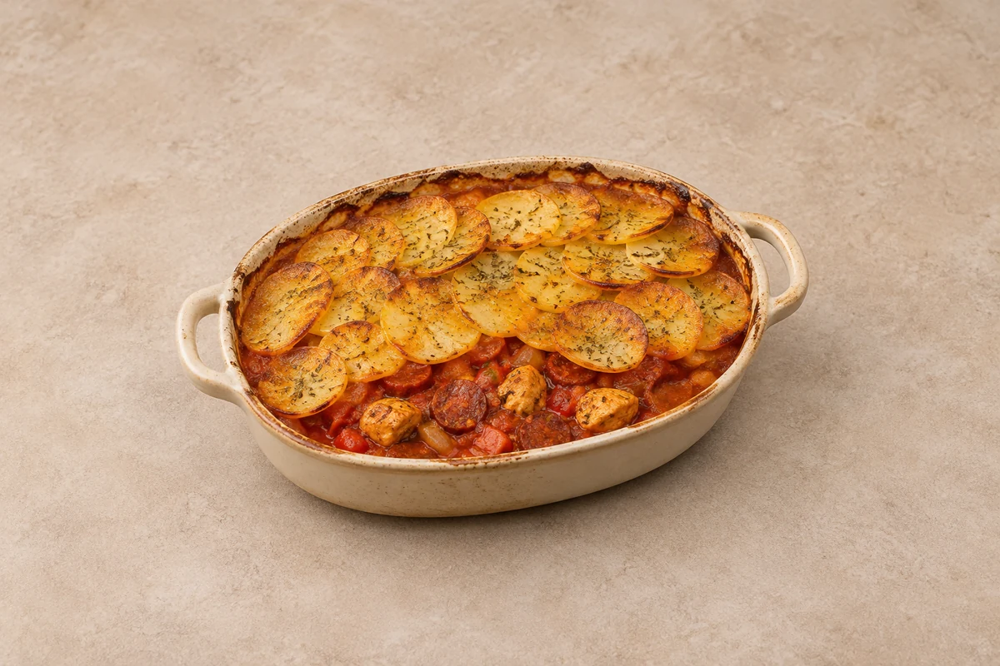

Bakes
Chicken, Chorizo & Potato Bake
Diced chicken breast and smoky chorizo in tomato sauce beneath golden, crisp-edged potatoes. Serves 2.
Prep20 mins
CookAbout 55 mins
people
Ingredient quantities update automatically

Ingredients
Ingredients
Method
Prepare the potatoes
Heat the oven to 200°C / 180°C fan / gas 6. Simmer the sliced potatoes in a pan of water for 6–8 minutes until just starting to soften but still holding their shape. Drain carefully and let steam dry.Brown the chicken
Heat half the oil in a deep frying pan over a medium-high heat. Brown the chicken for 4–5 minutes, then transfer to a plate.Cook the vegetables and chorizo
Add the chorizo, onion and pepper to the pan and cook over a medium heat for 6–8 minutes. Stir in the garlic, smoked paprika and oregano and cook for 1 minute.Make the filling
Add the tomatoes and stock. Return the chicken and juices and simmer for 6–8 minutes until the chicken is cooked through and the sauce has thickened. Taste before seasoning, as the chorizo and stock add salt.Layer the bake
Transfer to an approximately 20cm baking dish for 2 servings. Arrange the potato slices over the filling in overlapping layers, brush with the remaining oil and season lightly. Use a larger dish or multiple dishes when increasing servings.Bake
Bake for 30–35 minutes until the potatoes are tender and golden at the edges and the filling is piping hot. Rest for 5 minutes before serving.